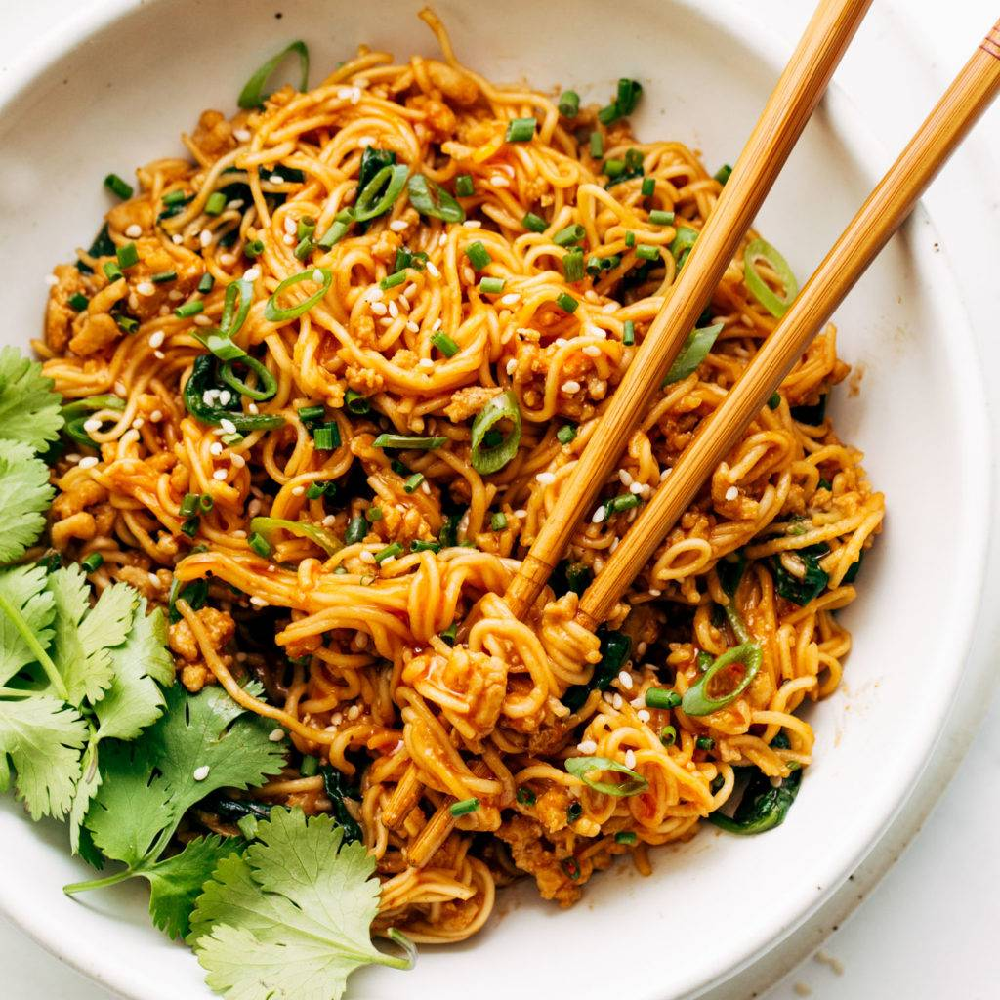

Noodles

Description:
The recipe is for a succulent stir fry noodle dish. Fully vegetarian though there are non-vegetarian versions.
Ingredients:
- Noodles
- Soy sauce
- Dark soy Sauce
- Sugar
- Sesame oil
- Water/Vegetable Stock
- Garlic
- Green onion
- Chopped red chili
- Bean sprouts
Recipe:
- In a bowl, mix soy sauce, dark soy sayce, sesame oil, water/vegetable stock, sugar till combined
- Cook noodles, drain and set aside
- In a pan, drizzle oil, add garlic, white part of green onion, red chili and saute together
- Add in the noodles and pour in the sauce, mix until noodles coated
- Turn heat to high, add bean sprouts, saute together
- Add in the rest of green onions, saute together
- Serve!